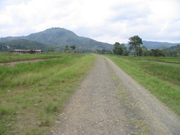
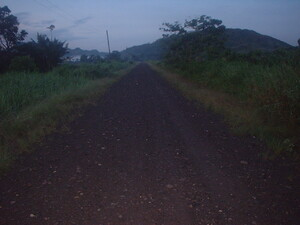

kelesadda  
/kɔlɔsadda/
Var. karsada
n.
“road”
n.
road or street
Wrd.Gloss: road
Eng. street; road; highway
Tag. kályes; daán
Ceb. kalye
Ilo.: kalsáda
OCM: Highways and Bridges (491)
Online dict status: -
Usage level: L
vi.
for someone (egpahungkelesadda, agent, egpA><ø-guN-) to walk on the road
Iyan seini ka peggipanew/peg-ikul te maluag ne dalan ne bayaanan te terak. Ka dalan dengan warè pad naay-ayari su migleb-eng-leb-eng pad wey lungahen ne eg-ikul te etew wey terak ne egpeureyik wey egpalaras. Piru kuntee meupiye e ka dalan su nasimintu e.
Egkeepes ad e ne egpahungkelesadda su masulug ka terak.
I don't like walking on the highway because there's lot of trucks.
Eng. walk on road; stay on road; road, walk on
Online dict status: -
Usage level: L
Updated by: RJH,TME
Last updated: 13/Oct/2009
This page last updated: 19/May/2012
Copyright © 2009-2010, Matigsalug Language Christian Association, Inc